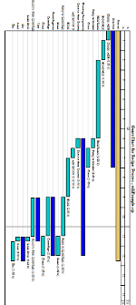

Evolving Objects (EO): an Evolutionary Computation Framework
EO is a template-based, ANSI-C++ evolutionary computation library which helps you to write your own stochastic optimization algorithms insanely fast.
Evolutionary algorithms forms a family of algorithms inspired by the theory of evolution, that solve various problems. They evolve a set of solutions to a given problem, in order to produce the best results. These are stochastic algorithms, because they iteratively use random processes. The vast majority of these methods are used to solve optimization problems, and may be also called "metaheuristics". They are also ranked among computational intelligence methods, a domain close to artificial intelligence.
With the help of EO, you can easily design evolutionary algorithms that will find solutions to virtually all kind of hard optimization problems, from continuous to combinatorial ones.
If you need immediate support or have any question, the best way to get answers is to subscribe to the mailing list and send your email to eodev-main@lists.sourceforge.net
Alternatively, you can join us on the official chatroom. You can try our webchat interface, or if you already use IRC, you can directly connect to the irc.freenode.org/#paradiseo multi-user chatroom with your favorite client.
Features ⤒
Component-based framework
Designing an algorithm with EO consists in choosing what components you want to use for your specific needs, just as building a structure with Lego blocks.
If you have a classical problem for which available code exists (for example if you have a black-box problem with real-valued variables), you will just choose components to form an algorithm and connect it to your fitness function (which computes the quality of a given solution).
If your problem is a bit more exotic, you will have to code a class that represents how your individuals (a solution to your problem) are represented, and perhaps some variations operators, but most of the other operators (selection, replacement, stopping criteria, command-line interface, etc.) are already available in EO.

Main Features
|  |
- Flexible design that permits to easily create virtually any algorithm
- Solution representation for continuous and combinatorial problems:
- binary-strings,
- permutations,
- vectors,
- easily write your own,
- …
- Several algorithm paradigms:
- evolution strategies,
- genetic algorithms,
- estimation of distribution,
- particle swarm optimization
- …
- Many selection and replacement operators:
- rank-based,
- deterministic or stochastic tournaments,
- roulette,
- elitism,
- …
- Ready-to-use variations operators:
- uniform initializer,
- gaussian mutation,
- subtree crossover,
- …
- Easy combination of several operators:
- proportional combination,
- sequential call,
- …
- Parallelization tools:
- Portable and human-readable parameter files
- Suspend and load population from files
- Versatile checkpointing and logging:
- graphical display,
- file dump,
- various statistics,
- signal catching,
- …
- Mersenne Twister random number generator (and various distributions)
- No useless computation (sparing fitness call, functor-based calls)
- Fast running speed, thanks to C++
- And more!
Portability
EO should work on Windows and any Un*x-like operating system with a standard-conforming C++ development system.
Recent versions of EO have been tested on the following platforms:
- Linux x86 with GCC 3.x and 4.x
- Linux x86_64 with GCC 3.x and GCC 4.x
- MacOS X/Darwin PowerPC with GCC 3.x
- MacOS X/Darwin x86 with GCC 4.x
- Microsoft Windows using Cygwin's GCC 3.x (cygming special).
- Microsoft Windows using Visual Studio 2003/2005; projects files are provided.
- Solaris SPARC with GCC 3.x
- Solaris x86 with GCC 3.x
Recent versions of EO uses the CMake portable build system, that permits to easily generate a build chain for your environment.
If you have tested EO on a system not listed here, please let us know.
If you are working on a system with an older C++ compiler there is a good chance that eo-0.9.3z.1 works. It is tested on Linux with gcc-2.9x and several systems (IRIX, Solaris) with egcs.
Presentations
A functional and "philosophical" overview of EO was presented at EA'01 conference. You can download the paper or the slides, or browse them right here:
You can also read this PowerPoint presentation, that shows the EO philosophy. It includes a Visual Basic macro for evolving objects in Visual Basic for Applications.
EO is described in the following scientific article:
M. Keijzer, J.J. Merelo, G. Romero, G., M. Schoenauer, "Evolving objects: A general purpose evolutionary computation library", Artificial Evolution, 2310, 829--888 (2002).
@Article{Keijzer2001,
title = "Evolving Objects: A General Purpose Evolutionary Computation Library ",
author = "Maarten Keijzer and J. J. Merelo and G. Romero and M. Schoenauer",
journal = "Artificial Evolution",
year = "2002",
volume = "2310",
pages = "829--888",
keywords = "genetic algorithms, genetic programming, evolutionary computation, metaheuristic, computational intelligence, optimization",
URL = "http://www.lri.fr/~marc/EO/EO-EA01.ps.gz",
size = "12 pages",
abstract = "This paper presents the evolving objects library
(EOlib), an object-oriented framework for evolutionary
computation (EC) that aims to provide a flexible set of
classes to build EC applications. EOlib design
objective is to be able to evolve any object in which
fitness makes sense.",
}
If you want to understand the message-passing parallelization module, check the introduction to eo::MPI by Benjamin Bouvier.
Here is a list of some known publications that used EO:
- J.J. Gilijamse, J. Küpper, S. Hoekstra, S.Y.T. van de Meerakker, G. Meijer,
Optimizing the Stark-decelerator beamline for the trapping of
cold molecules using evolutionary strategies,
Physical Review, A 73, 063410 (2006).
Also available at arXiv physics/0603108 (2006). - Johann Dreo, Using Performance Fronts for Parameter Setting of Stochastic Metaheuristics, Genetic and Evolutionary Computation Conference, (2009).
- Jacques Bibaï, Pierre Savéant, Marc Schoenauer, Vincent Vidal, An Evolutionary Metaheuristic Based on State Decomposition for Domain-Independent Satisficing Planning, Twentieth International Conference on Automated Planning and Scheduling (2010).
- Jacques Bibaï, Pierre Savéant, Marc Schoenauer, Vincent Vidal, An Evolutionary Metaheuristic for Domain-Independent Satisficing Planning, Genetic and Evolutionary Computation Conference (2010). Silver Medal at the Human-Competitive Competition
Code ⤒
Download
The current stable release is EO 1.0. It supports any standard-compliant C++ compiler.
You can obtain the latest version directly via GIT or browse the repository online.
All releases can be obtained from the SourceForge download area.
Facts
Those statistics are automatically generated by ohloh.net, directly from the EO source code.
License
EO is distributed under the GNU Lesser General Public License.
Note that this license places copyleft restrictions on a program created with EO, but does not apply these restrictions to other software that would links with the program.
Documentation
The tutorial demonstrates that writing an evolutionary algorithm evolving your own structures is now easy, using ready-to-use template files. Although the tutorial has not been upgraded for some time now and refers to version 0.9.2 of EO, it nevertheless remains the best way to dive into EO. You can start by trying it on-line at LRI or SourceForge, before downloading it. The tutorial is also included in the released sources.
The latest tutorial release.
The complete code is also well documented and you can look at the generated interface documentation.
The easiest way to create a complete new EO-project, even for new genomes, is to use the script provided in tutorial/Templates/; see the README in that directory and lesson 5 of the tutorial for detail.
Development ⤒
Mailing-lists
EO is an open development effort; that is why we have created mailing lists to discuss future developments, solve technical problems, announce releases, publish patches, and discuss evolutionary computation in general. Browse the archives or join the EO mailing lists.
Get involved
The following resources are available, thanks to sourceforge
- EO SourceForge Project Page
- EO
automatic documentation page at SF
- EO
tutorial page at SF
- Releases
- Mailing Lists
- Message Forums
- Bug Submission and Tracking
- Technical Support
- Code repository
Related software
The softwares listed here are using EO, but they are not maintained by the EO team. They may not be free softwares or may even be outdated.
- ParadisEO provides EO extensions for the flexible design of single solution-based metaheuristics, metaheuristics for multi objective optimization as well as hybrid, parallel and distributed metaheuristics.
- DegaX is an ActiveX control which embeds EO 0.8.4.
- EASEA was a GUI that permits to build evolutionary algorithm with EO or the GAlib. It is now a platform that allows program evolutionary algorithms on massively parallel many-core architectures.
- GUIDE is a GUI that allows the generation of evolutionary algorithms. It can use EO or ECJ.
Authors
EO was started by the Geneura Team at the University of Granada, headed by Juan Julián Merelo. The original Web site is also the only place where you will find old releases of EO (up to 0.8.7), but beware that it is not compatible at all with the current version.
The developement team has then been reinforced by Maarten Keijzer, the C++ wizzard, and Marc Schoenauer. Later came Jeroen Eggermont, who, among other things, did a lot of work on GP, INRIA Dolphin Team, Olivier König, who did a lot of useful additions and cleaning of the code and Jochen Küpper, working on infrastructure maintenance.
The project is now maintained by Johann Dréo, working on it with the help of Caner Candan. Benjamin Bouvier have designed a whole new MPI parallelization module.
Links
- COCO (COmparing Continuous Optimisers), a platform for systematic and sound comparisons of real-parameter global optimisers. COCO provides benchmark function testbeds and tools for processing and visualizing data generated by one or several optimizers.
- The Hitch-Hiker's Guide to Evolutionary Computation, FAQ for comp.ai.genetic.
- Wikipedia entries on Evolutionary algorithms.
- Charles Darwin: The Origin of Species.